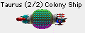
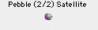
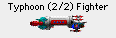

Ships are what you use to explore new stars, defend your colonies, and colonize new planets. There are several different kinds of ships, and you can create your own.
Spaceward Ho! ships are incredibly huge and expensive. As an example, your first Colony Ship will take almost a third of your planet's total resources, plus the entire industrial output of the planet for thirty years. It's a big boat.
You can build ships at any of your colonies. To do this, click on the planet where you want to build ships and select " Build Ships... " from the " Ships " menu or just double-click on the planet. A big dialog will pop up. This dialog lets you both build ships and design new ship types.
On the left side of the dialog is a list of the available ship types. If those don't suit your taste, you can design a new class by playing with the scroll bars in the lower right.
To move a fleet, just click and drag the fleet from the planet where it is to where you want it to go. If you can reach, you'll see an arrow pointing along the route your fleet will take. When you let up the mouse, you'll hear a "Hyahh!" sound, letting you know that the course is set. When you end the turn, the ship will go along its way.
If the fleet can't reach the star you've dragged to, the path will be shown by a dotted gray line. If the fleet has enough fuel to go to the star you've selected and come back, the path will be a double-pointed arrow.
To make a fleet hold still, or cancel its move, click on the fleet's icon and hold it for a second. When you've done it right, you'll hear a "Whoa!" sound when you let up the mouse.
When a fleet has a destination, and is planning to move when you end the turn, there will be a path showing where it's going. The path will be divided into segments showing how many turns it will take to get there.
Hit the TAB key to go to the next fleet at that planet.
A fleet will automatically refuel any time it goes to a planet you or your allies own. If a fleet doesn't have enough fuel to leave, you can send a Colony Ship to that planet, colonize it for a turn, and then have everybody leave or send a tanker.
A fleet's course can't be changed while it's between planets -- in hyperspace there's no turning back.
You can also control-click (or right-click) on a fleet to do an number of fleet-related things.
If a fleet has a line through it, it's being disbanded and will be scrapped into metal for next turn.
Sometimes you may want to divide a fleet into pieces or put several fleets together. To do this, select " Organize Fleets... " from the " Ships " menu. Then click and drag the ships around until they're distributed the way you want them.
You can combine different ships of different types together into the same fleet. But each ship type in a fleet can have it's own fleet options. Battle attitude is pretty self-explanatory. Delayed arrival means that the ship will time its hyperspace arrival to be a bit after then standard arrival time. If there's a battle, a delayed ship will miss the start of it.
As the game progresses, you'll find that metal is scarce and that your obsolete ships are next to useless. You may want to get rid of some of your older vessels. You can regain 75% of the metal from a fleet at your colonies by disbanding the fleet (select " Disband Current Fleet " from the " Ships " menu). Or you can scrap an entire ship type (select " Scrap Ship Types" from the "Ships" menu).
When you mark a ship type or fleet for scrapping, it doesn't scrap it until you end the turn. If you get cold feet before then, you can just undo your change before you end your turn.
If you only want to disband part of a fleet, use the " Organize Fleets... " dialog to divide the fleet into those you want to keep and those you want to scrap.
When you disband ships, if they're over a colony, the metal will just instantly go into your global supply, and you can use it immediately. If you don't own the planet the ships are over, the metal will fall down onto the planet. The next person to colonize it can then mine the metal from your scrapped ships.
This is possibly the coolest part of the game. As your technology increases, you'll want to start building more advanced ships using these new technologies. It's easy. Just set tech levels the way you want your new type to be in the " Build/Design Ships ..." dialog. You just move the scroll bars around to set the qualities of the new ship. (The rightmost side of the scroll bar is always whatever your current Tech level is.) When you've got your ship the way you want it, just build one (by pressing the "+" button) and the prototype will automatically be designed and built.
There are four major classes of ships: Colony Ships, Satellites, Scouts, and Fighters.

Colony ships carry people and colonize new stars for you. Colony Ships are incredibly expensive both in Money and Metal. Colony Ships cost so much that you'll want to build only a few of them. That, and because miniaturization doesn't do them much good, will mean that you probably won't want to use any Mini at all on your Colony Ships. Colony Ships are also the first thing the enemy will shoot at in a battle, so you'll want to be careful with them, too.
Satellites are ships that don't have engines. That means that their Range is zero. Satellites are a cheap, effective means of defending your planets against enemy attack. Unfortunately, they can't move; they can only defend the planet where they're built. Satellites are much smaller than normal ships, so it doesn't take as many shots to destroy them. Of course, it doesn't take nearly as much metal to build Satellites as Fighters, either.When a planet has Satellites, it'll have one or more rings around it in the Star Map.

Scouts and Fighters are your basic ships. The difference between scouts and fighters is a trade-off between Engines and Weapons. Scouts can have a Range three units higher than your Range Tech. Unfortunately, their maximum Weapon and Shield Tech is one lower than your current levels. This makes Scouts ideal for exploration, but not too good at combat.Spaceward Ho! will automatically put each Scout into its very own fleet, so it can independently go flying off to explore. Fighters automatically clump into one group.
Dreadnoughts are the battleships of a fleet. Very large. Very powerful. Very expensive. If you can build one; it packs quite a punch.
Tankers can travel with or behind your other types of fleets and will refuel ships parked at the same star they're at each turn. Individual tankers do have a limit to their effectiveness and won't be able to refuel large fleets right away.
Hmm. Lifeform ships. Interesting idea. Wonder how they'd work…
It costs more to build the prototype of a new ship type than ones that come after -- it takes effort to work the kinks out and do testing. This is especially true of ships with high miniaturization. Just keep in mind that the development cost is a one time thing associated with every new ship type.